WEBSITE DESIGN
-
Tech Collection
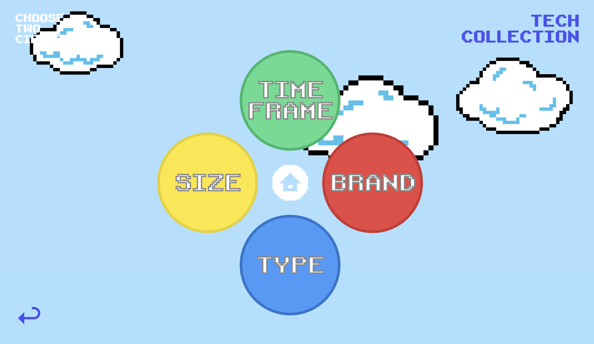Getting inspired by the electronic devices that were collected by my partner, I used the game theme to display data collection.
Date: March 2021 -
In Praise of Shadow
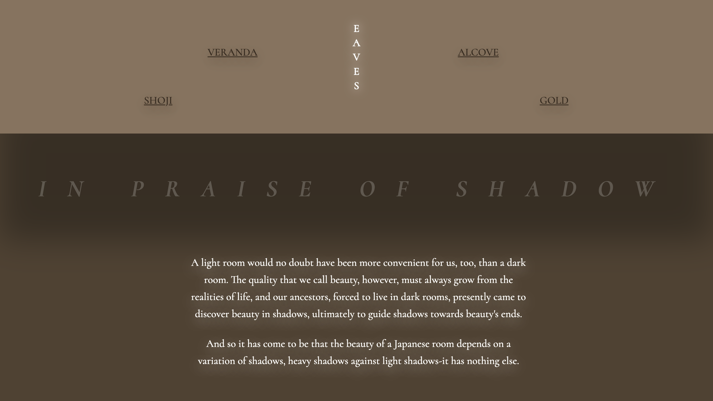Stories as Networks:
After reading the In Praise of Shadow by Jun'ichirō Tanizaki, I created an interactive website that displays the importance of light and shadow relationship utilized in Japanese architecture.
Date: February 2021 -
Make Urban Full of Nature

Input/Output:
A playful and interactive website that displays the need of nature in urban cities full of man-made products. User will write down environmentally friendly sentences already written above as the emojis related to nature pop up.
Date: April 2021 -
Treasure Hunt

Toy:
An interactive game that lets the fish find treasures hidden in coral reefs.
Date: November 2020
TYPOGRAPHY
-
Moon Cycle

Wikibook:
Desgined a book using the “Moon” page on Wikipedia. The interior’s color shifts as the moon rotates around the Earth and changes its amount of light and shadow. The small moon indication on the right side of each page shifts its shadow as pages are turned.
Date: December 2020 -
Cropped Letters

Experimental patterns created from indivdual letter cropped in 16 squares.
Used fonts:
Clarendon Regular: Q, R, T, Y
Didot LT Roman: A, F, R, S
Neue Haas Grotesk Bold: E, G, K, W
Date: September 2020 -
TRUST
I did an interview with my roommate, Yu Hwang, where I displayed our bonding we achieved under the political situation our national countries go thorugh. Blue represents Yu from South Korea and pink depicts myself from Japan.
Utilized raw binding technique to display our honest feelings and actions toward each other. The colors slowly emerge to represent how our relationship shifted overtime.
Date: March 2021 -
GAME CENTER

Zine: Collect your experiences in Japan
This zine will let you experience the Japanese gaming culture interactively. "GAME CENTER" is a name used in Japan for arcade. You will move around the tourist character and collect the items hanging on the wires.
First game is UFO CATCHER, aka claw crane. Second is GACHAPON, a toy vending machine with good quality toys inside hand-sized plastic capsules. Third is KARAOKE, a room for people to sing along instrumental versioned songs.
Date: July 2020
ILLUSTRATION
-
Memory | 思い出
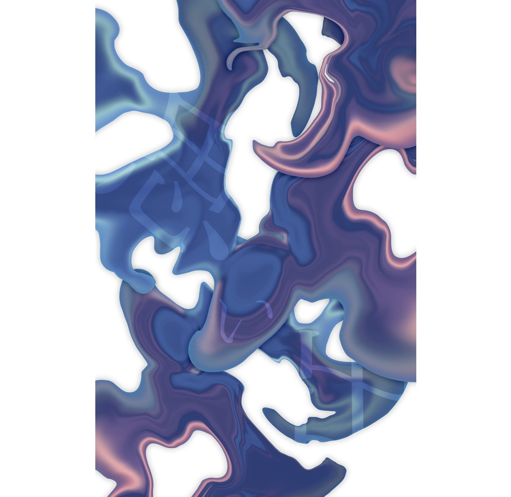What is the one object you would want to keep with you or would miss the most if everything else around you is about to disappear?
身の回りの物が全て無くなってしまいそうな時、あなたが1番とっておきたい物はなんですか？
Date: August 2021 -
On a Journey to Find My Flow | 自分の流れを探す旅
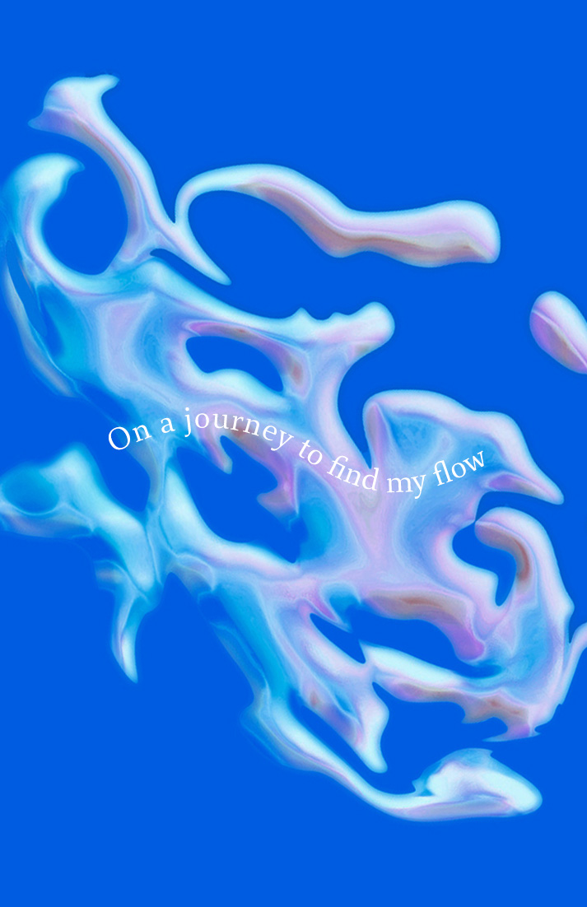My unpredictable emotions flow inside my body in a form of liquid that shifts its appearance at various rates. Dealing with our emotions leads us on a journey to further discover who we are as a person.
体内で私の予測できない感情は様々な速度で形状を変える液体で表される。この感情と向き合うことによって自分がどんな人間なのか、更なる理解へと導く旅に出る。
Date: August 2021 -
Ocean
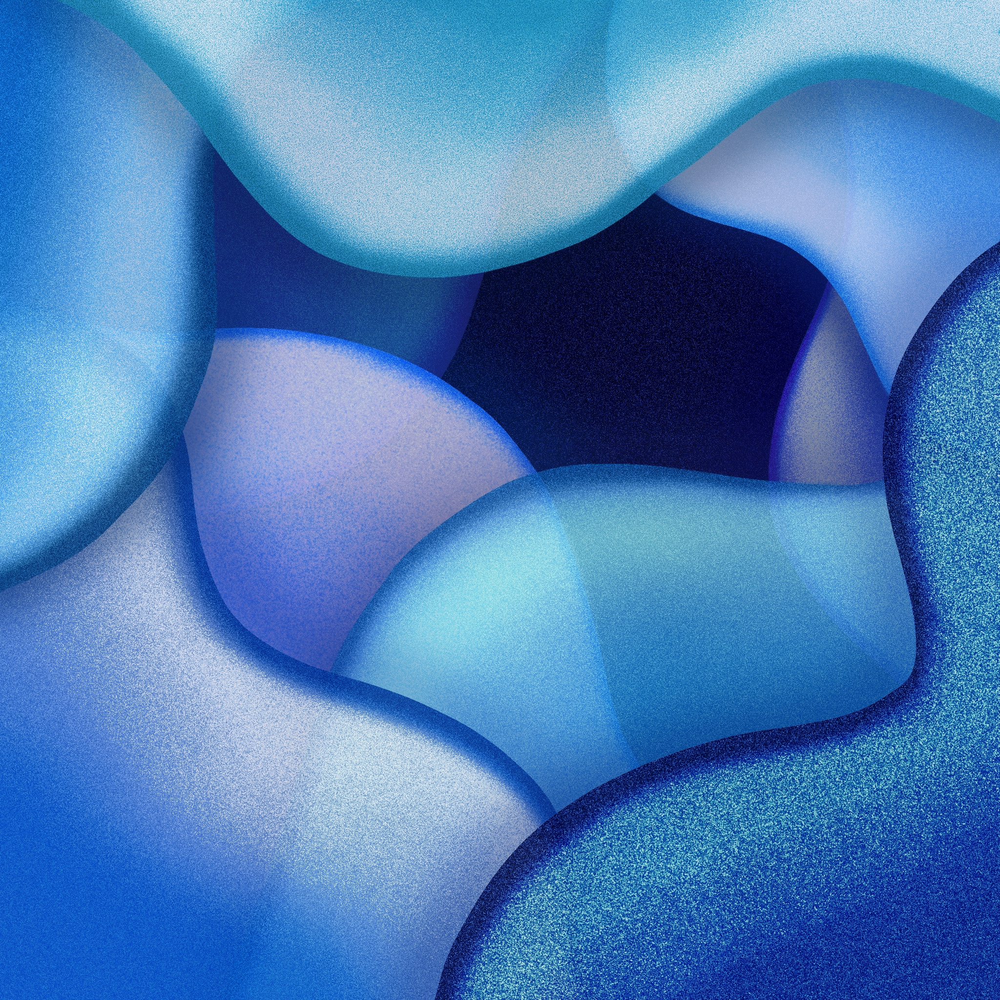Date: August 2020
-
Bubbles
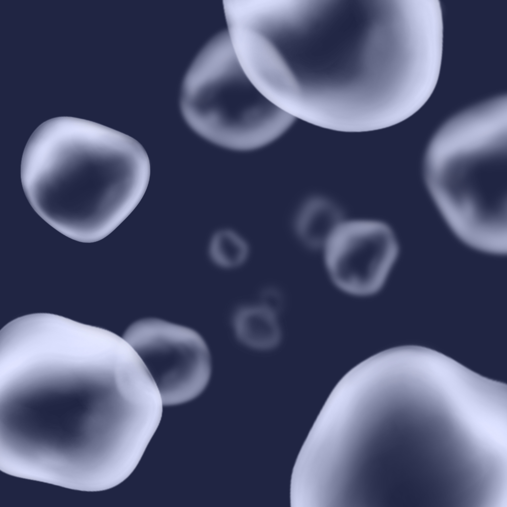Date: July 2020
-
Ink Spread
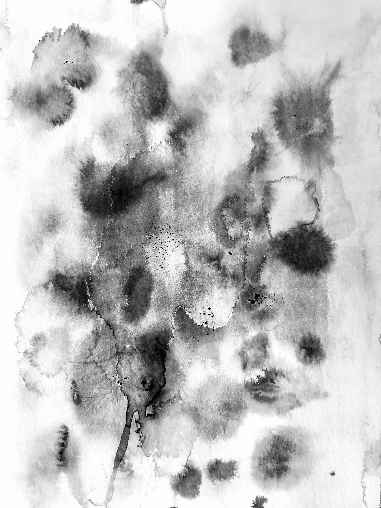Date: July 2020
-
Brooklyn St
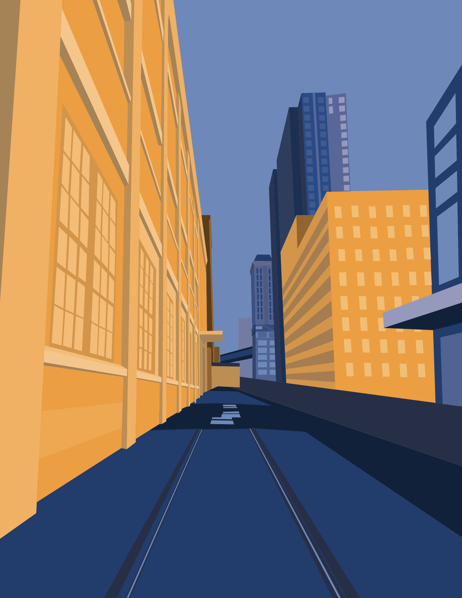Date: April 2020
ANIMATION
-
Disturbance
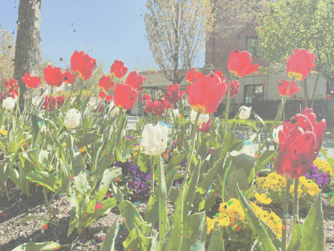Date: May 2021
-
Hanabi
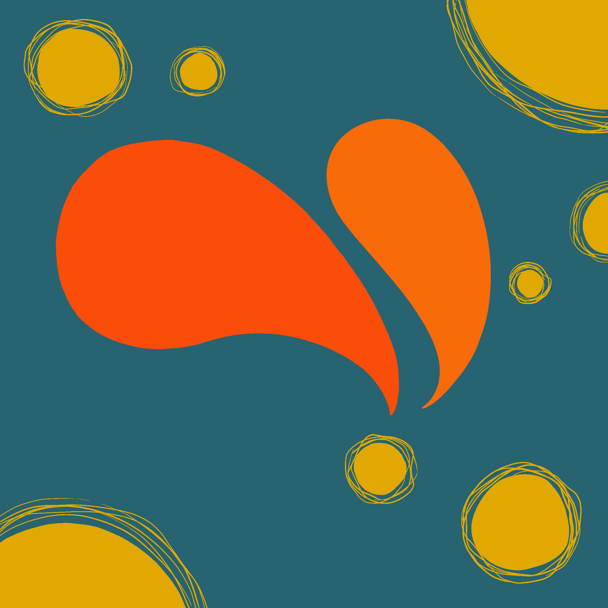Date: March 2020
-
By 2072...
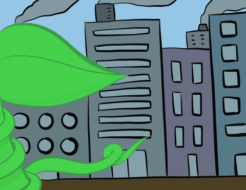REMEMBERING MY FUTURE:
What do I hope to see by 2072?
I would want to see the greens manupulating over Earth instead of seeing humans take over with the excessive wastes and gas emissions.
Through the audio, you can hear the sound of manmade objects, which is a state of humans destroying the planet while only worrying about satisfying our needs and desires.
Had fun recording audio for this :)
Date: May 2020
LIGHT & SHADOW
-
Screened Clouds
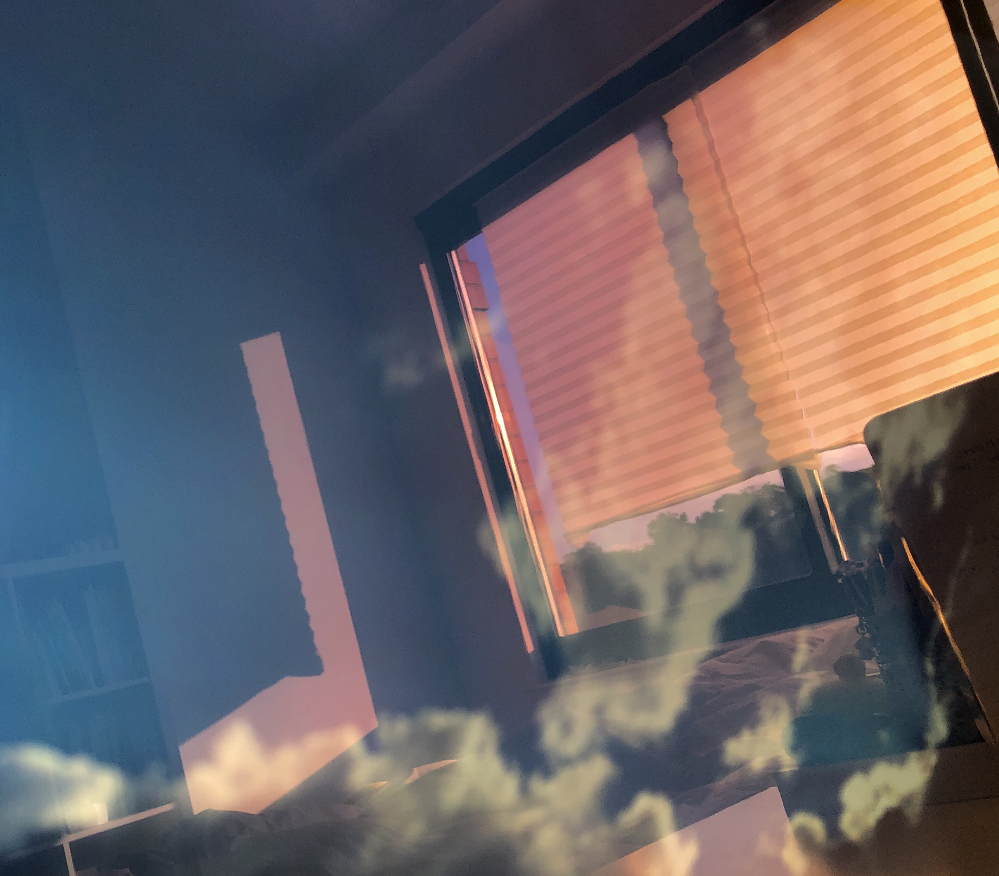Date: October 2020
-
Shrine
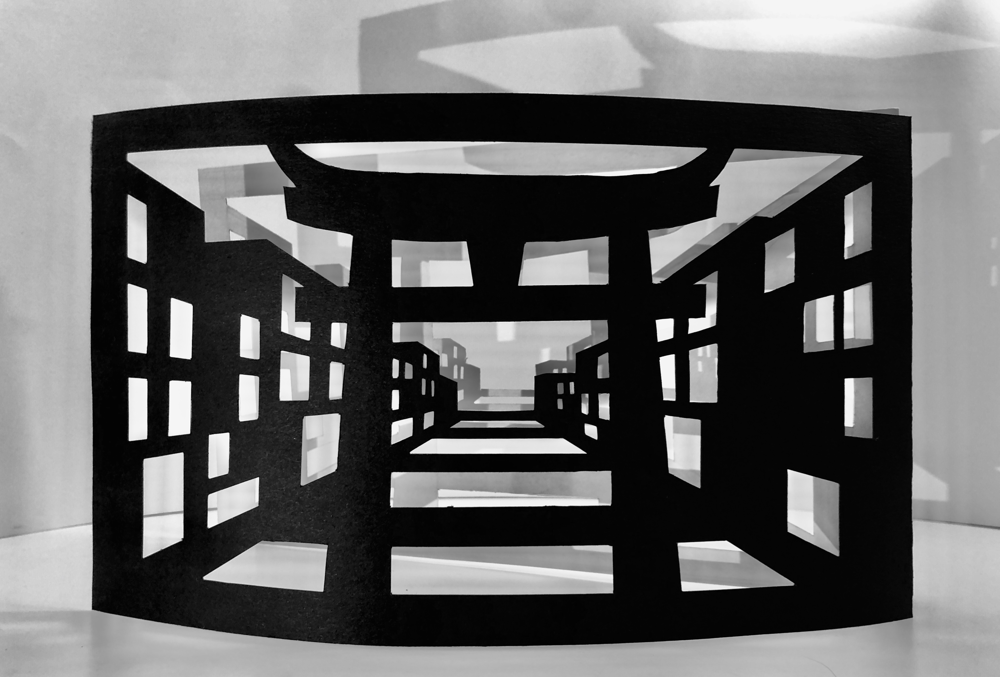Date: July 2020
-
Red & Blue
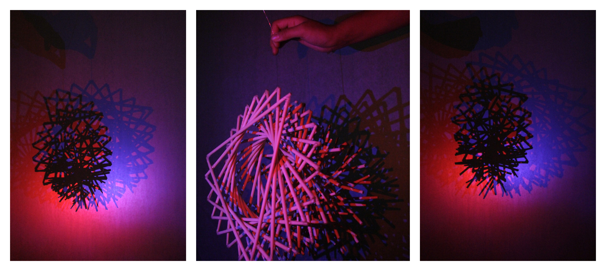Date: January 2019
-
Barrier
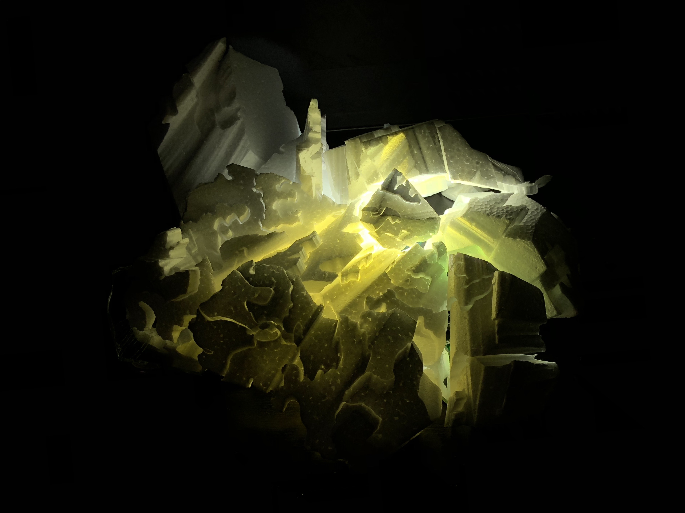Date: October 2018